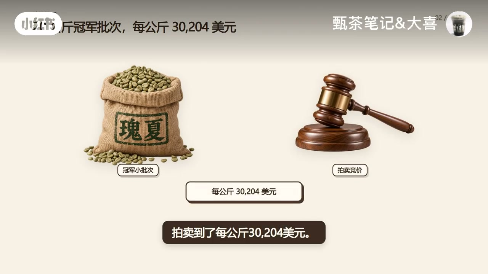
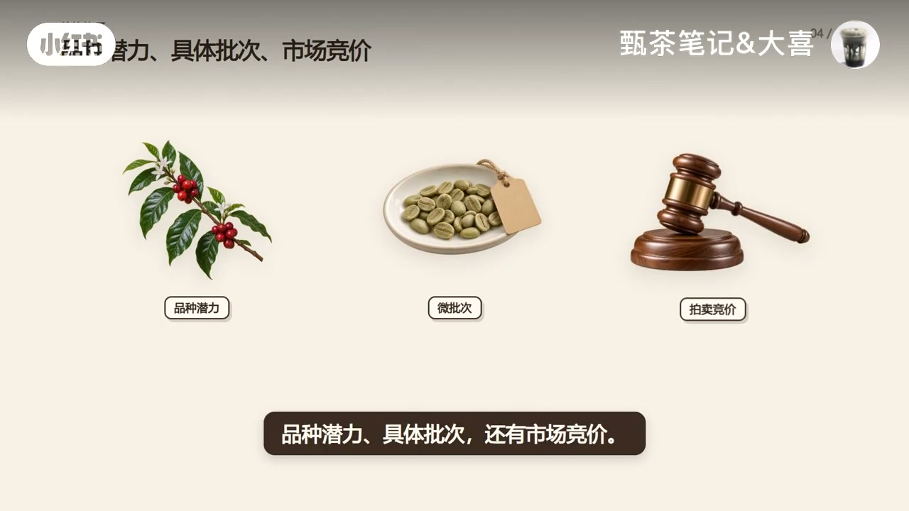
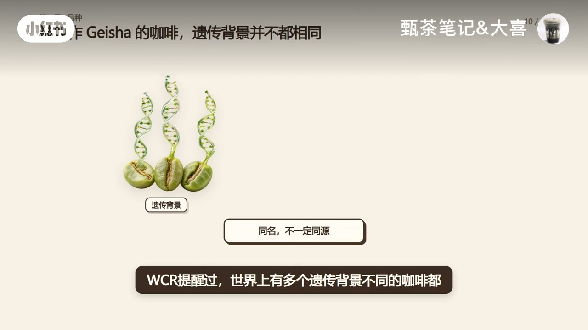
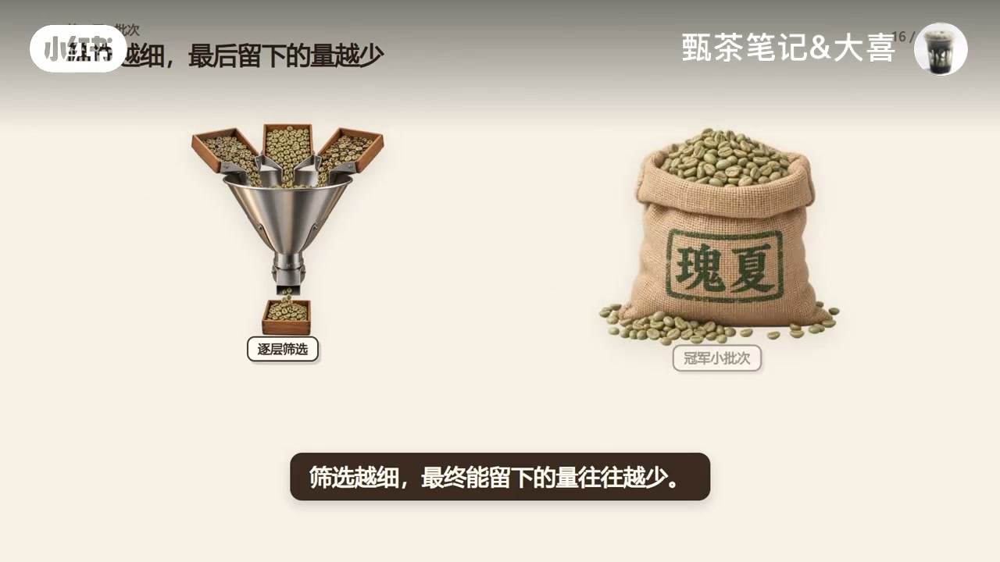
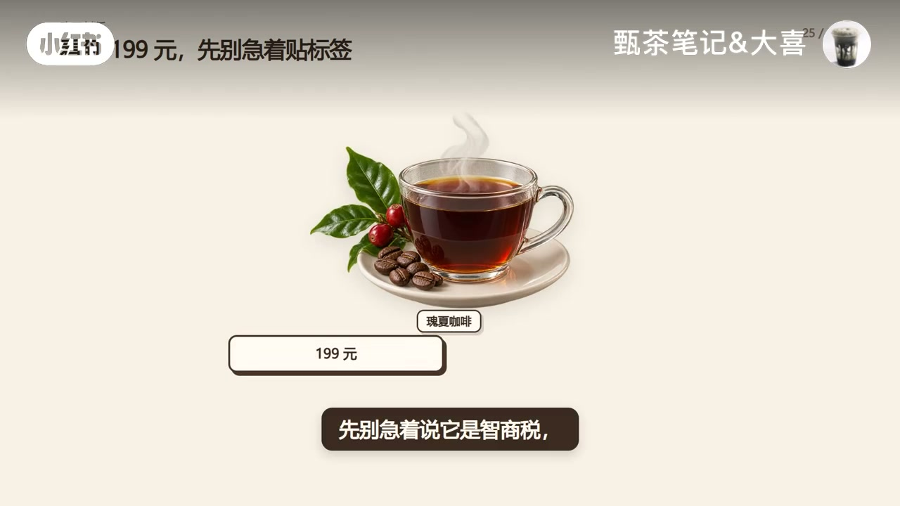

内容要点
小红书账号「甄茶笔记&大喜」用一个尖锐对照开场：同样叫瑰夏，普通咖啡馆的一杯和冠军拍卖批次，价格可以差到天上。视频先用画面抛出极端拍卖数字，再把「贵」拆成品种潜力、具体（微）批次与市场竞价三层，并强调同名不等于同源、拍卖价不能倒推普通成本。结尾落到买豆清单与口味匹配。下列实录按时间线展开；数字与历史细节均标注为视频画面/作者口播，未独立核验。
知识结构
冠军小批次可拍到约每公斤 3 万美元量级；产量低只说对一部分，真正拉开差距的是潜力、批次与竞价。
WCR 口径：高海拔品质潜力极高、产量潜力低；花香/茉莉/桃子/茶感带来辨识度，是进入高价市场的门票。
多个遗传背景曾共用 Geisha/Gesha 名；T2722 也需海拔、成熟采摘与管理；2004 翡翠庄园分区独立批次改写玩法。
筛选越细量越少；售价≠成本；极端拍卖价是成交结果，不能倒推普通生产成本。
别贴智商税标签，也别只看「瑰夏」二字；问清国家/庄园/地块/处理/批次，并先确认口味偏好。
真正贵的往往不是「瑰夏」这两个字，而是把品质潜力做出来、信息清楚、数量又很少的具体批次。买之前先问批次信息，再问自己更想为花香茶感买单，还是更看重稳定厚重与性价比。
00:00–00:30开场：同名瑰夏，为什么不是同一个价格
封面把咖啡果、瑰夏包装、一杯咖啡、生豆麻袋和拍卖槌摆在同一张桌上，标题直接问：「瑰夏为什么这么贵？」约前 30 秒口播几乎被 Whisper 漏掉，信息主要靠画面推进。
作者先抛出一个极端锚点：在 2025 年 Best of Panama，一支约 20 公斤的冠军批次被标到每公斤约 30,204 美元（画面数字）。紧接着把「普通瑰夏批次」和「冠军小批次」并置，点破常见误解——很多人以为贵只因树难种、产量低；画面写「只说对一部分」。真正拉开差距的，是品种潜力、具体（微）批次，还有市场竞价。


00:30–00:54第一层：品种潜力给了入场门票
口播接上：这里主要说的是著名的 Panama Geisha。世界咖啡研究（WCR）把它在高海拔的品质潜力评为极高，产量潜力却是低——它不是靠结很多果实取胜，而是在管理得当的高海拔环境里，有机会表现出细致的花香、茉莉、桃子和茶感。
作者把这种辨识度定位为「进入高价市场的基础」。话锋一转抛出观众疑问：既然品种这么厉害，随便找个地方种瑰夏，不就能卖高价了吗？
00:54–01:28名字本身不等于顶级瑰夏
答案很干脆：还真不行。瑰夏这个名字本身不等于顶级瑰夏。WCR 提醒过，世界上有多个遗传背景不同的咖啡都曾被叫做 Geisha/Gesha——画面用 DNA 示意写「同名，不一定同源」。
真正让巴拿马瑰夏出名的 T2722 后代，也要在合适海拔、成熟采摘和良好管理下，才可能发挥品质潜力。即使是同一个庄园，不同地块、采收时间和处理批次，结果也可能完全不同。
历史节点落到 2004 年：翡翠庄园第一次把不同区域采收的咖啡分成独立批次；来自高海拔 Jaramillo 的一批 100% Geisha 单独杯测后香气突出，并与后续比赛、拍卖纪录叙事衔接（具体名次与金额以画面为准，未独立核验）。

01:28–02:29稀缺与竞价：售价很高，不等于成本就这么高
这一段 Whisper 出现长空洞与乱码，内容以画面字幕为准。作者先讲筛选：越细筛，最终能留下的量往往越少——冠军小批次是「剩下来」的稀缺结果。
接着纠偏成本直觉：售价很高，不等于生产成本就这么高。画面给出冠军批次约 20 公斤、总成交约 604,080 美元等数字，并强调它面对的不是普通农产品批发市场，而是全球买家争夺极少量冠军批次的拍卖场。
关键句写在画面上：「拍卖价是成交结果，不能倒推普通成本。」同名瑰夏可能分别来自普通商用批次、高海拔微批次、获奖批次与年度冠军——价格谈的是层级，不是两个字本身。

02:29–03:17买之前先问批次，也先问自己的口味
消费决策段把情绪标签先拿掉：先别急着说它是智商税，也别只看到「瑰夏」两个字就认定它值。你真正应该问的是——哪个国家、哪个庄园、哪个地块、什么处理，有没有明确批次信息？
最后还要看它是不是符合你的口味。喜欢深烘、坚果、巧克力和厚重低酸的人，未必会喜欢一只花香明显、口感像茶的浅烘瑰夏。
收束逻辑很清楚：品种潜力给了高端市场门票；精细生产与微批次筛选减少了数量；比赛、稀缺和竞价又把最顶尖的一小部分继续推高。真正贵的不是「瑰夏」这两个字，而是那些把品质潜力发挥出来、信息清楚而且数量很少的具体批次。片尾留下选择题：同样预算，你更愿意为鲜明花香和茶感买单，还是更看重稳定、厚重和性价比？

详细文字转录（44段）
以下内容按 Whisper 原始分段完整呈现，可能包含识别误差；正文已按画面与语境校正（如瑰夏、结很多果实、微批次、Jaramillo），转录区保持原样以便核对。约 00:00–00:30 与 01:28–02:29 口播/字幕漏识别较多，信息见画面文案与章节叙述。
一杯龟下,
世界咖啡研究把他在高海拔的品质潜力评为极高,
产量潜力却是低。
他不是靠解很多果实取胜,
而是在管理得当的高海拔环境里,
有机会表现出细致的花香、茉莉、桃子和茶感。
这种辨识度是他进入高价市场的基础。
但听到这里,你可能会问,
既然品种这么厉害,
随便找个地方种龟下,不就都能卖高价了吗?
还真不行,
龟下这个名字本身不等于顶级龟下。
WCR提醒过,
世界上有多个遗传背景不同的咖啡都曾被叫做Gasha。
真正让巴拿马龟下出名的T2722后代,
也要在合适海拔、成熟采摘和良好管理下,
才可能发挥出品质潜力。
即使是同一个庄园、不同地块、采收时间和处理批次,
结果也可能完全不同。
2004年,
翡翠庄园第一次把不同区域采收的咖啡分成独立批次。
来自高海拔Jeramillo的一批100%Gasha单独杯测以后,
香气表现非常突出,
,
買家對極少量冠軍 P
,
先别急着说它是智商税,
也别只看到龟下两个字就认定它值。
你真正应该问的是,
哪个国家、哪个庄园、哪个地块、什么处理,
有没有明确批次信息?
最后还要看它是不是符合你的口味。
喜欢深烘、坚果、巧克力和厚重低酸的人,
未必会喜欢一只花香明显、口感像茶的浅烘龟下。
所以龟下为什么贵?
品种潜力给了它进入高端市场的门票,
精细生产和V批次筛选减少了数量,
比赛、稀缺和竞价又把最顶尖的一小部分继续推高。
真正贵的不是龟下这两个字,
而是那些把它的品质潜力发挥出来、
信息清楚而且数量很少的具体批次。
如果同样预算摆在你面前,
你更愿意为鲜明花香和茶感买单,
还是更看重稳定、厚重和性价比。